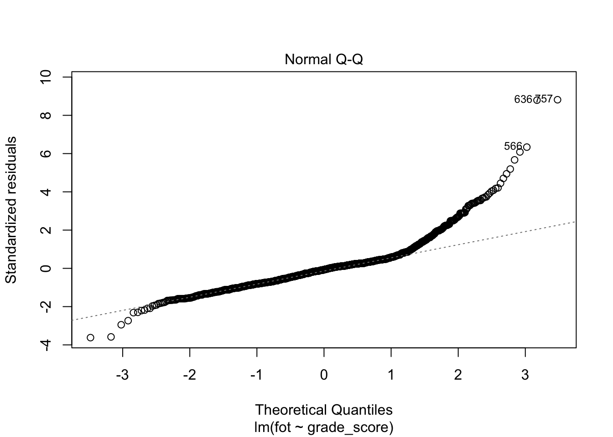

14 Простая линейная регрессия
Ненадолго откатимся обратно к корреляции. Она позволяет тестировать гипотезы о связях между количественными переменными. Однако кроме проверки наличия или отсутствия связей между переменными, нас ещё интересует, как бы мы могли управлять одними переменными с помощью других. Для этого необходимо построение некоторой модели.
Когда мы строили диаграммы рассеяния, мы добавляли на них линию тренда, которая отражала линейную составляющую связи между визуализируемыми переменными.
Эта линия и есть интересующая нас модель. Визуально мы такую линию проведём очень легко, а вот как мы нам получить её математическое выражение?
14.1 Формализация модели
Первое, что нужно вспомнить — это общее уравнение прямой. Оно выглядит так:
\[ y = kx + b, \]
где \(k\) — угловой коэффициент (slope), задающий угол наклона прямой к оси \(x\), а \(b\) — свободный член (intercept), который обозначает ординату точки пересечения прямой с осью \(y\).
Итого, чтобы получить уравнение прямой, нам надо знать два этих числа. Что у нас есть, для этого есть? У нас есть наши наблюдения — то есть \(x\) и \(y\).
Мы привыкли к тому, что \(x\) и \(y\) являются неизвестными, но теперь, когда мы ищем уравнение прямой на основе имеющихся измерений, ситуация изменяется.
Запишем уравнение, используя общепринятие обозначения.
\[ y = b_0 + b_1 x \]
Уравнение отражает зависимость между переменными \(x\) и \(y\), значения которых нам известны, так как у нас есть результаты измерений, а вот неизвестными теперь являются \(b_0\) и \(b_1\).
В терминах статистической модели:
- переменная \(y\) называется зависимая, предсказываемая, целевая переменная или регрессант
- переменная \(x\) носит названия независимая переменная, предиктор или регрессор
- \(b_0\) и \(b_1\) называются коэффициентами или параметрами модели.
Важно! Несмотря на использование терминов зависимая и независимая переменные, необходимо чётко понимать, что сам регрессионный анализ, как и корреляционный, ничего нам не говорит о причинности. Мы выражаем \(y\) через \(x\), но точно так же можем выразить и \(x\) через \(y\) — и модель будет подобрана, так как нет никаких математических ограничений. Поэтому если мы хотим сделать по результатам регрессионного анализа вывод о причинно-следственной связи между явлениями, нам необходимо либо серьёзное теоретическое обоснование нашего вывода — почему мы выбрали в качестве зависимой и независимой переменных именно эти? — либо использование экспериментельного дизайна исследования, где мы обосновываем причинно-следственный характер связи именно через дизайн эксперимента.
14.2 Идентификация модели
Идентификация модели сводится к нахождению коэффициентов \(b_0\) и \(b_1\). Мы хотим провести такую прямую, которая наилучшим образом будет описывать имеющуюся в данных закономерность, поэтому необходимо найти критерий, по которому мы будем определять «хорошесть» нашей прямой.
Графически мы делаем вот что: проводим прямую через облако точек. Очевидно, что красная прямая описывает закономерность совсем плохо, зелёная — чуть получше, а синяя — то, что нам нужно.
Из картинки также очевидно, что даже синяя прамая не описывает наши данные максимально точно — не все точки попали на прямую. Ясно, что такой прямой мы провести и не сможем — точек же целое облако. Поэтому любая построенная нами модель будет содержать ошибку — вновь по причине вариативности и неопределенности данных. Таким образом, модель, «хорошесть» которой мы пытаемся определить выглядит так:
\[ y_i = b_0 + b_1 x_i + e_i \]
А графически ошибки будут тут:
Уравнение же нашей модели вот такое:
\[ \hat y = b_0 + b_1 x \]
Игрек в шляпке показывает, что это моделируемое значение нашей целевой переменной, и оно отличается от того, которое есть в данных.
Собственно, задача идентификации модели — минимизировать ошибку модели, подбирая её параметры.
\[ Q_{res} = \sum_{i=1}^n e_i^2 = \sum_{i=1}^n \big(y_i - (b_0 + b_1x_i) \big)^2 = \sum_{i=1}^n (y_i - \hat y_i)^2 \rightarrow \underset{b_0, b_1}{\min} \]
Ошибки модели \(e_i\) также называются остатки (residuals), то есть то, что модель не смогла объяснить. Обозначенное выше условие минимизации ошибки лежит в основе метода наименьших квадратов.
14.2.1 Метод наименьших квадратов
Осторожно! Очень математично!
Если внимательно посмотреть на условие минимизации ошибки модели, то можно увидеть, что оно представляет собой функцию двух аргументов:
\[ f(b_0, b_1) = \sum_{i=1}^n (y_i - b_0 - b_1 x_i)^2 \]
Это квадратичная функция, и чтобы нам дальше удобнее было с ней работать, раскроем скобки:
\[ f(b_0, b_1) = \sum_{i=1}^n (y_i - b_0 - b_1 x_i)(y_i - b_0 - b_1 x_i) \\ f(b_0, b_1) = \sum_{i=1}^n (y_i^2 - 2 x_i y_i b_1 - 2 y_i b_0 + x_i^2 b_1^2 + b_0^2 + 2 x_i b_1 b_0) \]
Чтобы определить, при каких значения \(b_0\) и \(b_1\) функция будет принимать минимальное значение, нужно взять две частные производные по \(b_0\) и \(b_1\) и приравнять их в нулю.
Берём частные производные:
\[ \frac{f(b_0, b_1)}{\partial b_0} = \sum_{i=1}^n (-2 y_i + 2 b_0 + 2 x_i b_1) = -2 \sum_{i=1}^n \big(y_i - (b_0 + b_1 x_i) \big) \\ \frac{f(b_0, b_1)}{\partial b_1} = \sum_{i=1}^n (-2 x_i y_i + 2 x_i^2 b_1 + 2 x_i b_0) = -2 \sum_{i=1}^n \big(y_i - (b_0+ b_1 x_i) \big) x_i \]
Приравниваем производные к нулю и решаем систему уравнений:
\[ \cases { -2 \sum_{i=1}^n \big(y_i - (b_0 + b_1 x_i) \big) = 0, \\ -2 \sum_{i=1}^n \big(y_i - (b_0+ b_1 x_i) \big) x_i = 0; } \] \[ \cases { b_1 \sum_{i=1}^n x_i + \sum_{i=1}^n b_0 = \sum_{i=1}^n y_i, \\ b_1 \sum_{i=1}^n x_i^2 + b_0 \sum_{i=1}^n x_i = \sum_{i=1}^n x_i y_i; } \] \[ \cases { b_1 \sum_{i=1}^n x_i + n b_0 = \sum_{i=1}^n y_i, \\ b_1 \sum_{i=1}^n x_i^2 + b_0 \sum_{i=1}^n x_i = \sum_{i=1}^n x_i y_i; } \]
\[ \cases { b_0 = \dfrac{\sum_{i=1}^n y_i}{n} - b_1 \dfrac{\sum_{i=1}^n x_i}{n} = \bar y - b_1 \bar x \\ b_1 = \dfrac{n \sum_{i=1}^n x_i y_i - \sum_{i=1}^n x_i \sum_{i=1}^n y_i}{n \sum_{i=1}^n x_i^2 - \big( \sum_{i=1}^n x_i \big)^2} = \dfrac{\overline {xy} - \bar x \cdot \bar y}{\sigma^2_x} } \]
В сухом остатке из метода наименьших квадратов на надо вынести вот что:
- задача индентификации модели линейной регрессии имеет аналитическое решение — то есть мы можем подобрать коэффициенты модели, опираясь только на имеющиеся данные
- и оно вот такое
\[ \cases { b_0 = \bar y - b_1 \bar x \\ b_1 = \dfrac{\overline {xy} - \bar x \cdot \bar y}{\sigma^2_x} = \dfrac{\sum (x_i - \bar x) (y_i - \bar y)}{\sum (x_i - \bar x)^2} } \]
Это, безусловно, радостно и приятно.
А если вы умеете в матрицы, то всё ещё проще
Аналитическое вычисление коэффициентов выглядит громоздко и трудоёмко — хотелось бы как-то попроще. Нам на помощь приходят матрицы!
Имеющуюся у нас модель мы можем переписать в следующем виде:
\[ \boldsymbol{y}= \boldsymbol{X}\boldsymbol{b}+ \boldsymbol{e}, \] где \(\boldsymbol{y}\) — вектор нашей зависимой переменной, \(\boldsymbol{X}\) — матрица независимых переменных, \(\boldsymbol{b}\) — вектор коэффициентов модели, \(\boldsymbol{e}\) — вектор ошибок (остатков) модели.
Может возникнуть резонный вопрос: «почему \(\boldsymbol{X}\) матрица, ведь у нас только одна независимая переменная?». Так как вектор коэффициентов модели \(\boldsymbol{b}\) содержит два элемента \((b_0, b_1)^\mathrm{T}\), то для удобства вычислений к вектору значений предиктора \(x\) дообавляют вектор, состоящий из единиц, который будет отвечать за интерсепт нашей модел — в результате получается матрица \(\boldsymbol{X}\), которая имеет следующий вид:
\[ \boldsymbol{X}= \begin{pmatrix} 1 & x_{11} \\ 1 & x_{21} \\ 1 & x_{31} \\ \vdots & \vdots \\ 1 & x_{n1} \end{pmatrix} \]
При умножении вектора \(\boldsymbol{b}= (b_0, b_1)^\mathrm{T}\) на матрицу \(\boldsymbol{X}\) как раз будут получатся выражения типа \(b_0 \cdot 1 + b_1 x_{i1}\), а это то, что нам надо.
Опуская детали, сразу укажем матричное решение для коэффициентов модели:
\[ \boldsymbol{b}= (\boldsymbol{X}^\mathrm{T}\boldsymbol{X})^{-1}\boldsymbol{X}^\mathrm{T}\boldsymbol{y} \]
Выглядит проще, не так ли?
Нужно заметить ещё один важный момент: в ходе вычисления коэффициентов мы берём обратную матрицу от матрицы \(X^\mathrm{T}X\). Этот факт нам будет полезен в следующем разделе.
14.3 Тестирование качества модели
Супер! Мы построили модель! Теперь надо понять, насколько она хороша для наших данных. Но перед этим нам надо сделать шаг назад и прояснить ряд моментов, на которые мы имплицитно опираемся, но пока ещё не проговорили.
Мы помним, что работая с выборкой, мы хотим получить информацию о генеральной совокупности. Строя модель, мы предполагаем, что в генеральной совокупности есть связь, которая описывается следующим уравнением:
\[ y_i = \beta_0 + \beta_1 x_i + \varepsilon_i \]
Таким образом, построив модель, мы получили оценки генеральных параметров:
\[ b_0 = \hat \beta_0, \quad b_1 = \hat \beta_1, \quad e_i = \hat \varepsilon_i \]
Кроме того, при построении модели мы также исходили из нескольких предположений.
- Во-первых, мы считали, что связь между предикторами и зависимой переменной линейная.
- Во-вторых, мы предположили, что наша модель полностью улавливает тренд закономерности, то остатки (ошибки) модели случайны. Их среднее равно нулю: \(\bar \varepsilon = 0\),
- а также остатки модели не коррелируют между собой: \(\text{cor} (\underset{i \neq j}{\varepsilon_i \varepsilon_j}) = 0\).
- Ну, а раз остатки заключают в себе случайный компонент модели, то они должны быть распределены нормально \(\varepsilon \thicksim \mathcal{N}(0, \sigma^2)\),
- причём их дисперсия должна быть одинакова при любых значениях предиктора \(\sigma_i^2 = \sigma^2 = \mathrm{const}\).
Так-с, ну, теперь можно приступать с анализу модели.
14.3.1 Коэффициент детерминации
Первое, что хочется понять — насколько наша модель информативна. Иначе говоря, сколько дисперсии наших данных она смогла объяснить. На практике работают не с дисперсией, а с суммой квадратов, что почти то же самое — это мы уже видели в дисперсионном анализе.
Вся изменчивость наших данных (total sum of squares, TSS) определяется так:
\[ \text{TSS} = \sum_{i=1}^n (\bar y - y_i)^2 \]
На одной из картинок нам уже встречалась «красная модель» — это и было среднее по выборке. То есть графически TSS выглядит так:
Одну часть этой изменчивости объясняет модель (explained sum of squares, ESS):
\[ \text{ESS} = \sum_{i=1}^n (\bar y - \hat y_i)^2 \]
Другую часть этой изменчивости модель не улавливает, и она остаётся необъяснённой (остаточной) (residual sum of squares, RSS):
\[ \text{RSS} = \sum_{i=1}^n (y_i - \hat y_i)^2 \]
Очевидно (особенно по графику), что
\[ \text{TSS} = \text{ESS} + \text{RSS} \]
Не очевидно! Ты ещё в прошлый раз обещал пояснить!
Поясняю.
Пойдем в лоб по формуле.
\[ \text{TSS} = \sum (y_i - \bar y)^2 = \\ \sum (y_i - \hat y_i + \hat y_i - \bar y)^2 = \\ \sum \big( (y_i - \hat y_i) + (\hat y_i - \bar y_i) \big)^2 = \\ \sum (y_i - \hat y_i)^2 + \sum (\hat y_i - \bar y)^2 + 2 \sum (y_i - \hat y_i) (\hat y_i - \bar y) = \\ \text{RSS} + \text{ESS} + 2 \sum (y_i - \hat y_i) (\hat y_i - \bar y) \]
Ну, норм. Теперь надо доказать, что \(\sum (y_i - \hat y_i) (\hat y_i - \bar y)\) всегда равно нулю. Вспомним, что \(\hat y_i = b_0 + b_1 x_i\):
\[ \sum (y_i - \hat y_i) (\hat y_i - \bar y) = \\ \sum (y_i - b_0 - b_1x_i)(b_0 + b_1x_i - \bar y) = \]
Воспользуемся формулой для вычисления \(b_0\)
\[ b_0 = \bar y - b_1 \bar x \] и подставим её в выражение:
\[ = \sum (y_i - \bar y + b_1 \bar x - b_1 x_i) (\bar y - b_1 \bar x + b_1 x_i - \bar y) = \\ \sum \big( (y_i - \bar y) - b_1 (x_i - \bar x) \big) \cdot b_1 (x_i - \bar x) = \\ \sum \big( b_1 (x_i - \bar x) (y_i - \bar y) - b_1^2 (x_i - \bar x)^2 \big) = \\ b_1 \sum (x_i - \bar x) (y_i - \bar y) - b_1^2 \sum (x_i - \bar x)^2 = \]
Теперь вспомним, что
\[ b_1 = \frac{\sum (x_i - \bar x) (y_i - \bar y)}{\sum (x_i - \bar x)^2} \]
Подставим:
\[ = \frac{\Big( \sum (x_i - \bar x) (y_i - \bar y) \Big)^2}{\sum (x_i - \bar x)^2} - \frac{\Big ( \sum (x_i - \bar x) (y_i - \bar y) \Big)^2 \cdot \sum (x_i - \bar x)^2}{\Big( \sum (x_i - \bar x)^2 \Big)^2} = \\ \frac{\Big( \sum (x_i - \bar x) (y_i - \bar y) \Big)^2}{\sum (x_i - \bar x)^2} - \frac{\Big ( \sum (x_i - \bar x) (y_i - \bar y) \Big)^2}{\sum (x_i - \bar x)^2} = 0 \]
В качестве метрики информативности модели используется коэффициент детерминации \(R^2\), который вычисляется по формуле:
\[ R^2 = \frac{\text{ESS}}{\text{TSS}} = 1 - \frac{\text{RSS}}{\text{TSS}}, \]
из чего следует, что \(0 \leq R^2 \leq 1\), а значит коэффициент детерминации может быть интерпретирован как доля дисперсии данных, которую смогла объяснить модель.
Считается, что если модель объясняется 0.8 и более дисперсии данных, то она хороша, хотя этот порог о-о-очень сильно зависит от конкретной задачи и исследовательской области.
Кстати, вопрос на подумать: может ли коэффициент детерминации быть отрицательным?
14.3.2 Статистическая значимость модели
На основе всё тех же сумм квадратов мы можем сделать вывод о том, насколько в целом наша модель статистически значима. Для этого нам надо заняться тестированием некоторой статистической гипотезы. Она формулируется так:
\[ H_0: \beta_0 = \beta_1 = 0 \\ H_1: \beta_0 \neq 0 \vee \beta_1 \neq 0 \]
Для тестирования данной гипотезы используется следующая статистика:
\[ F = \frac{\text{MS}_e}{\text{MS}_r} = \frac{\text{ESS} / \mathrm{df_e}}{\text{RSS} / \mathrm{df_r}} \overset{H_0}{\thicksim} F(\mathrm{df_e, df_r}), \]
где \(\mathrm{df_e} = p - 1\), \(\mathrm{df_r} = n-p-1\), \(p\) — число предикторов в модели, \(n\) — число наблюдений.
Как и всегда, для \(F\)-статистики рассчитывается p-value, на основе значения которого мы делаем статистический вывод о статистическом равенстве коэффициента детерминации нулю, а следовательно, о статистической значимости модели в целом.
14.3.3 Статистическая значимость отдельных предикторов
Если модель значима в целом, значит среди её коэффициентов есть те, которые статистически отличны от нуля. Иначе говоря, есть такие предикторы, которые значимо связаны с нашей целевой переменной. В случае простой линейной регрессии предиктора всего два — intercept и slope. Intercept не всегда интерпретабелен, поэтому основное внимание уделяют угловому коэффициенту.
Статистическая значимость коэффициента тестируется так:
\[ H_0: \beta_1 = 0 \\ H_1: \beta_1 \neq 0 \\ t = \frac{b_1 - \beta_1}{\text{SE}_{b_1}} = \frac{b_1}{\text{SE}_{b_1}} \overset{H_0}{\thicksim} t(\text{df} = n-p-1), \]
где \(\text{SE}_{b_1} = \frac{s_r}{\sum_{i=1}^n (x_i - \bar x)^2}\), \(s_r^2 = \frac{\sum_{i=1}^n (y_i - \hat y)^2}{n-2}\)
Хвала небесам, оно все считается само.
14.3.4 Результаты регрессионного анализа
Посмотрим на данные из индустрии. У нас есть данные некоторой компании, в которых есть переменная fot (ФОТ — фонд оплаты труда) и переменная grade_score (интегральный балл по грейду). С первой всё ясно — количество денег, которое заложено на оплату труда сотрудника. Со второй переменной всё чуть сложнее — это оценка сотрудника, рассчитываемая по некоторой схеме, неизвестной нам, ибо NDA1.
Ну, да бох с ним, как там этот грейд рассчитывается. Нам ведь для построения регрессии важно что — чтобы была некоторая целевая количественная переменная, и некоторый предиктор, тоже количественный. У нас есть и то, и другое.
Посмотрим на связь двух переменных:
Картинка местами прикольная и даже забавная, но в целом мы наблюдаем некоторую положительную взаимосвязь между переменными, линия тренда с положительным наклоном — норм, можно пытаться это всё дело моделировать.
Регрессионный анализ нам покажет что-то такое:
##
## Call:
## lm(formula = fot ~ grade_score, data = ds)
##
## Residuals:
## Min 1Q Median 3Q Max
## -171435 -28467 -3305 15470 418192
##
## Coefficients:
## Estimate Std. Error t value Pr(>|t|)
## (Intercept) -7.483e+04 3.358e+03 -22.28 <2e-16 ***
## grade_score 1.118e+00 2.433e-02 45.98 <2e-16 ***
## ---
## Signif. codes: 0 '***' 0.001 '**' 0.01 '*' 0.05 '.' 0.1 ' ' 1
##
## Residual standard error: 47450 on 1993 degrees of freedom
## Multiple R-squared: 0.5147, Adjusted R-squared: 0.5145
## F-statistic: 2114 on 1 and 1993 DF, p-value: < 2.2e-16Таблица невероятно похожа на результаты дисперсионного анализа, не так ли? Падазритильна…
Некоторые отличия, конечно, есть — пройдемся по колонкам:
Estimate— оценка коэффициента при нашем предикторе, то есть \(b_1\)Std. Error— стандартная ошибка коэффициента (нужна для вычисления следующей колонки)t value— t-статистика, используемая для тестирования статистической значимости предиктора- это уже знакомый нам t-тест, который был в корреляционном анализе
Pr(>|t|)— это так обозвали p-value, которые рассчитывается для t-статистики
Кроме таблицы, нам нужны еще две последние строчки, в которых указан \(R^2\) и \(F\)-статистика со своим p-value.
Что можно заключить по результатам анализа?
- Во-первых, что модель в целом статистически значима (F(1, 1993) = 2114, p < .001) и объясняет 51% дисперсии данных.
- Во-вторых, что предиктор модели (
grade_score, интегральный балл по грейду) также статистически значим.
Ну, красота.
14.3.5 Интерпретация коэффициента при предикторе
— А ежели наш предиктор значим, то это же получается, что коэффициент при нем статистически отличен от нуля?
— Да, именно так.
— А можем ли мы его каким-либо образом содержательно проинтерпретировать?
— Да.
— А как?
— Ровно так, как [возможно] говорили на математике.
Вообще угловой коэффициент показывает, на сколько изменится целевая переменная при увеличении предиктора на единицу. Поэтому мы можем сказать, что при увеличении ингерального балла по грейду на единицу фонд оплаты труда сотрудника возрастает на 1118₽.
Дорого-богато.
14.4 Диагностика модели
Окей, наша модель значима в целом, а значит значимы и её предикторы, она объясняет приемлемую долю дисперсии данных. Неужели этого недостаточно?
Недостаточно. При построении модели мы исходили из ряда предпосылок. Напомним их:
- линейность связи
- нормальность распределения остатков и нулевое математическое ожидание
- равенствво дисперсии остатков при различных значениях предикторов (гомоскедастичность)
- независимость остатков от предикторов модели
Линейность связи можно проверить визуализацией корреляции между переменными.
Другие предпосылки мы можем проверить с помощью диагностических графиков.

Данные графики позволяют провести диагностику модели.
Нормальность распределения остатков отображена на втором графике (Normal Q-Q). Если все наблюдения находятся на или близко к пунктирной линии, то распределение остатков не отличается от нормального. В данном случае мы наблюдаем, что в области верхних квантилей (правая второна графика) остатки модели начинают ползти вверх — значит наша модель не до конца ухватывает имеющуюся закономерность.
Первый (Residual vs Fitted) и третий (Scale-Location) графики позволяют проверить независимость остатков от предикторов модели и требование гомоскедастичности. На графике не должно определяться никаких явных паттернов. В данном случае мы видим, что на первом графике (Residual vs Fitted) разброс остатков по мере движения по оси \(x\) слева направо постепенно увеличивается — не выполнено требование гомоскедастичности. На третьем графике (Scale-Location) выявляется паттерн линейной связи (обратите внимание на расположение красной линии), что говорит о том, что требование независимости остатков модели от предикторов не выполнено. Итого, вновь модель не до конца ухватывает имеющиеся закономерности.
Последний график позволяет определить влиятельные наблюдения. Это такие наблюдения, удаление/добавление которых сильно повлияет на положение регрессионной прямой. В данном случае все наблюдения располагаются в пределах критических значений (серая пунктирная линия в правом верхнем углу).
Что можно заключить по результатам диагностики модели? Модель необходимо дорабатывать. Она ловит часть закономерности, присутствующей в данных, но необходимо вводить дополнительные предикторы, чтобы регрессия ухватывала имеющуюся закономерность более полно.
14.5 Корреляция vs регрессия
Есть некоторый регрессионный хайп о том, что «корреляция — отстой метод, и регрессия — кул». Методы, действительно похожи, однако попробуем разобраться, что к чему.
- Сходства
- Оба метода тестируют гипотезы о связях
- Если мы не имеет дела с экспериментальным дизайном — там предшествование во времени и отсутствие третьих переменных контролируется именно на уровне дизайна, что позволяет нам делать причинно-следственные связи
- Оба метода — корреляция и простая линейная регрессия — работают с количественными переменными
- Оба метода тестируют гипотезы о связях
- Различия
- Корреляция нам дает только количественное выражение силы и направления связи. Регрессия строит модель, которую мы можем использовать для предсказаний на новых данных.
- Корреляция позволяет тестировать гипотезу о связях только между двумя переменными. Регрессия позволяет включать в модель несколько предикторов.
Итого, если у вы работаете только с двумя переменными, в целом, решительно всё равно, делаете вы корреляционный анализ или регрессионный. Конечно, если у вас стоит исследовательская задача, а не предиктиквная — тогда регрессия. Если же вы хотите изучать более сложные закономерности, то добро пожаловать в следующую главу.
Non-disclosure agreement, соглашение о неразглашении.↩︎